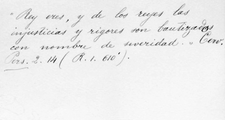

Kilómetro y kilogramo. Los directores de La Industria a manera de introducción de la columna Notas filológicas, señalaban: “Habíéndonos preguntado un amigo por qué es esdrújulo kilómetro y grave kilogramo, no obstante tener la misma formación griega, consultamos el punto con un sabio filólogo y compatriota nuestro, quien nos ha contestado lo que sigue:” Y por supuesto, a renglón seguido exponen las respuesta de Cuervo que resumimos: “La acentuación de estas voces no tiene por base la similaridad de los elementos componentes, sino la cantidad prosódica del último de éstos en latín o en griego. Si la penúltima sílaba es breve, la combinación resulta esdrújula: bípedo, trípode; si es larga, grave: bicorne, triptongo. Como la e penúltima es breve se dice centímetro; como la a es larga se dice centigramo”[1].
Koiné. Para Cuervo, el español de América no representa un simple traspaso del castellano de la Península, sino era el resultado del “cruce y mezcla” de las diferencias dialectales y sociales de los conquistadores españoles que se establecieron en el Nuevo Mundo. En diversas ocasiones Cuervo expresa esta idea de una koiné americana surgida de la nivelación del habla de los primeros colonos, “sobre la base de los términos generales de todos entendidos y con el rasero de la lengua oficial y administrativa, aunque predominando ocasionalmente algunos términos locales, si era notable el contingente de alguna provincia española”. Cuervo llama algunas veces al español de América la “resultante” y otras el “término medio” a que llegaron los diversos elementos que formaron los primeros asentamientos de los conquistadores y colonizadores españoles en el Nuevo Mundo: las características regionales quedaron ahogadas y hubo predominio de la lengua común castellana. ‘Nivelación’, ‘término medio’, ‘resultante’, son las diversas denominaciones del concepto con que Cuervo se explica la formación de la base del español de América[2].
* * *
[1] Cuervo, Obras, iii, 95.
[2] Cfr. Guitarte, 1983, 29-30.
